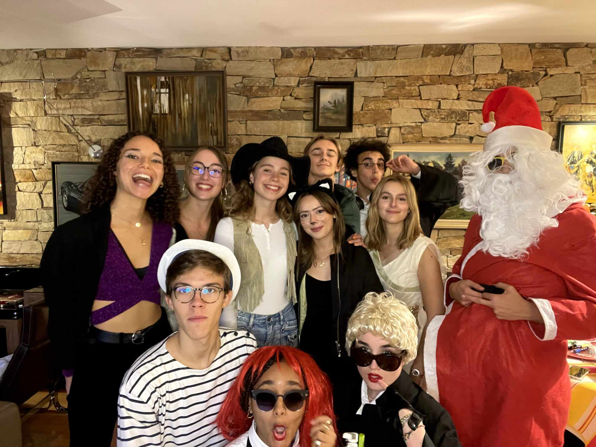

My name is Cyrielle, I’m 18. I was born in Montmorency and moved to Rouen. I spent 10 years of my life there. I have a brother and a sister. My sister's name is Justine and my brother's name is Gregoire.
I am passionate about music, I paint and draw a lot. I did 10 years of gymnastics. I am passionate about geopolitics. I love meeting new people.
I am in business school at ESSEC business school, I want to understand the world today and understand the world around me. I study subjects such as accounting, macro economics, statistics.
My friends are high school friends, Philippine and Clémence are my best friends. I have a lot of friends, in this picture it was my birthday and it was a costume party. I also have a friend named Pierre who is with me at ESSEC. We met 10 years ago.
